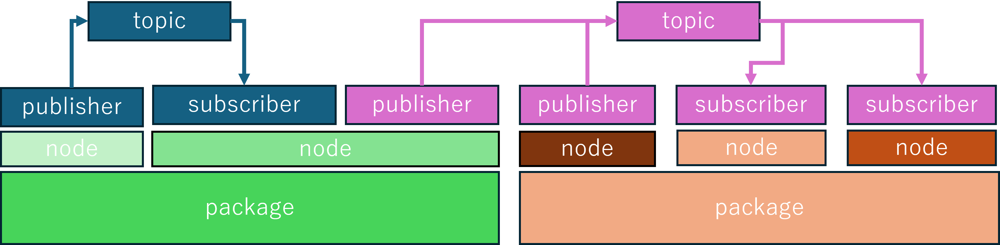

ros2上で動かすアプリケーション的なものです
ros2を使う際にはこれらのpackageを作成し動かします
package上にあるコード同士の通信に使われるものです
ros2はlinuxOS上で動くミドルウェアです
そのためイメージ的にはubuntuの上にros2がありそのros2上でros2のpackageが動くという形式になっています
node間の通信を表します
node上に作りtopicにメッセージを配信します
node上に作りtopicにメッセージを受信します
node間通信の一種です
client,server通信のような動きを行います